Подхват
Подхват
Подхват
Подхват
ИИ-агент подскажет, что делать, найдёт помощь рядом и доведёт случай до передачи хозяину.
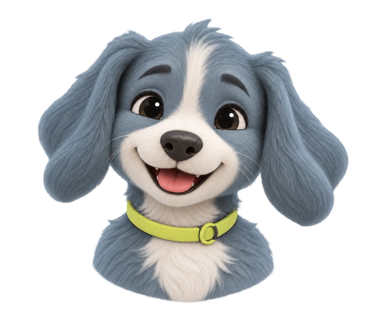
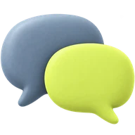
Скаут живёт внутри приложения. Пишите ему текстом, записывайте голосовые, присылайте фото или видео: он задаёт короткие вопросы, подсказывает безопасные первые шаги и собирает ответы в карточку случая.
Если ситуация выходит за рамки самопомощи, Скаут называет подходящую службу или специалиста и помогает связаться. Он работает круглосуточно.
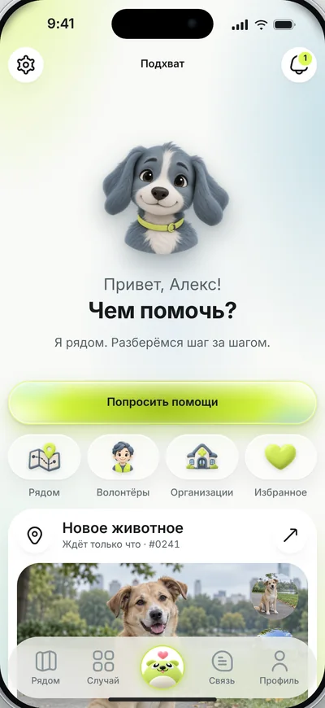
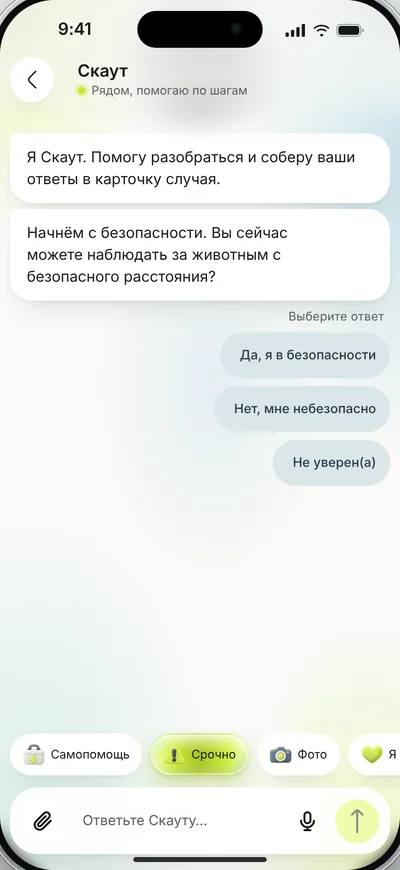

Первая помощь в несколько основных шагов.
Нашёл животное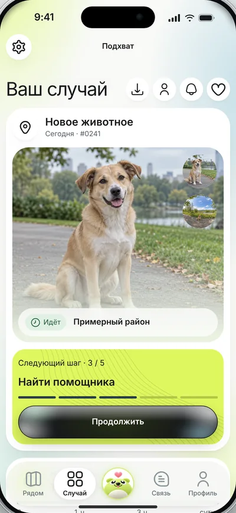
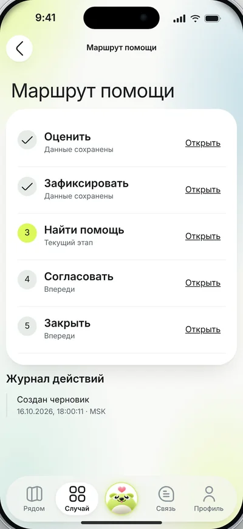
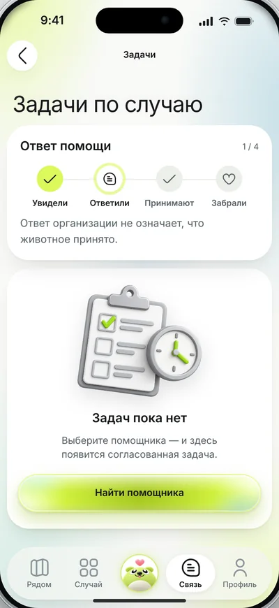
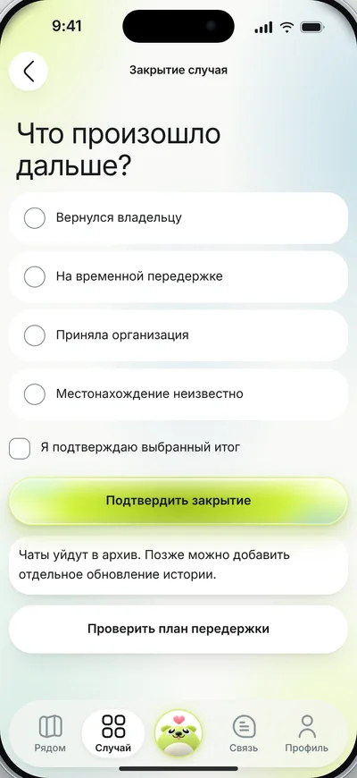
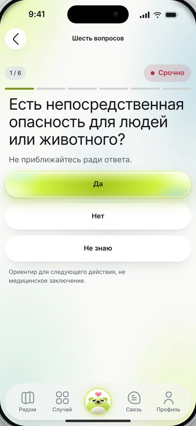
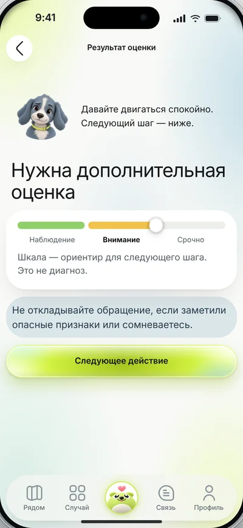
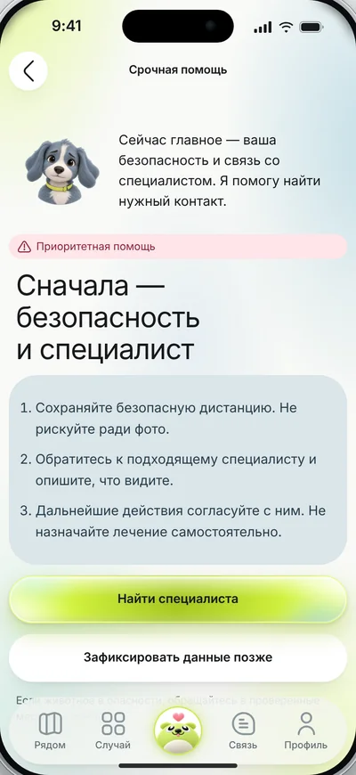
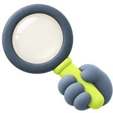
Первым идёт вопрос о непосредственной опасности для людей или животного. Приближаться ради ответа не нужно: так и написано на экране.
По ответам Скаут показывает ориентир для следующего шага: наблюдение, внимание или срочно. Это подсказка, а не диагноз, и приложение прямо об этом говорит.

В разделе «Связь» собраны волонтёры, клиники, приюты и фонды. Их можно отфильтровать по расстоянию, скорости ответа и рейтингу; у каждого видно, чем он готов помочь. Есть быстрый запрос на передержку на ночь.
Предложение помощи ещё не означает, что место найдено: приём подтверждается отдельно, и приложение так и пишет.
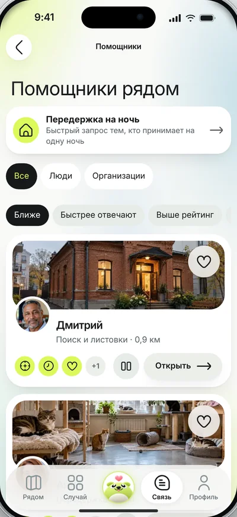
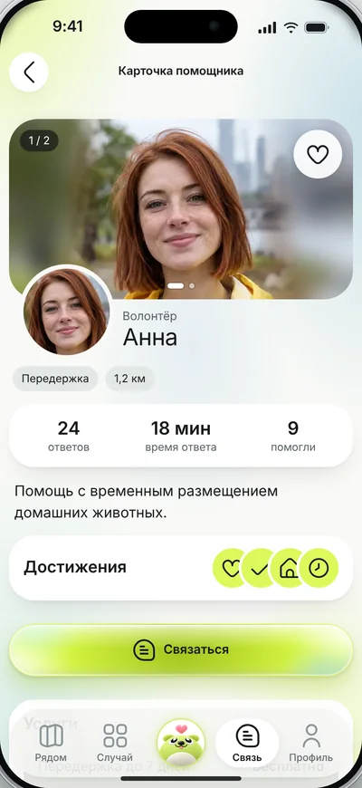
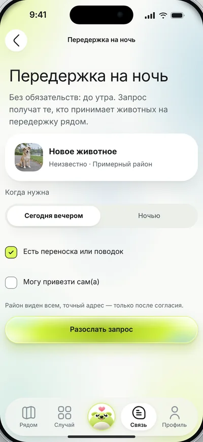
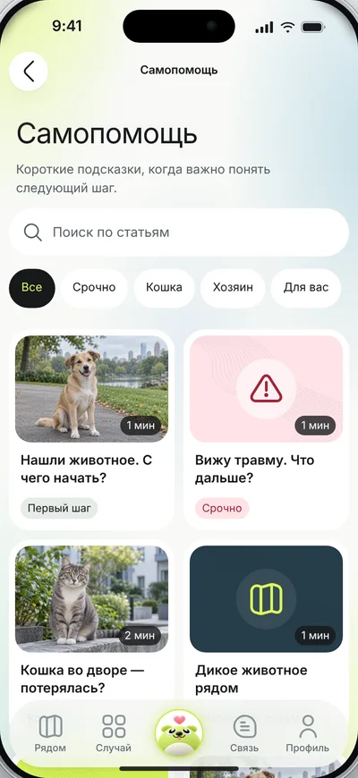
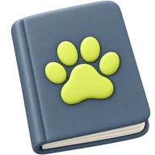
Больше двадцати памяток на 1–2 минуты чтения.
Памятки работают как самопомощь, когда важно быстро понять следующий шаг. Главная фишка — возможность изучения проблемы как онлайн, так и офлайн: памятки открываются даже тогда, когда нет сети, а это самое главное.

Функции, которые усиливают основной сценарий.

По снимкам собирается ID-слепок признаков, который можно сверить с объявлениями.
Это не биометрическая идентификация, поэтому совпадение нужно проверять отдельно.
Если животное напугано или ранено, скан пропускают.
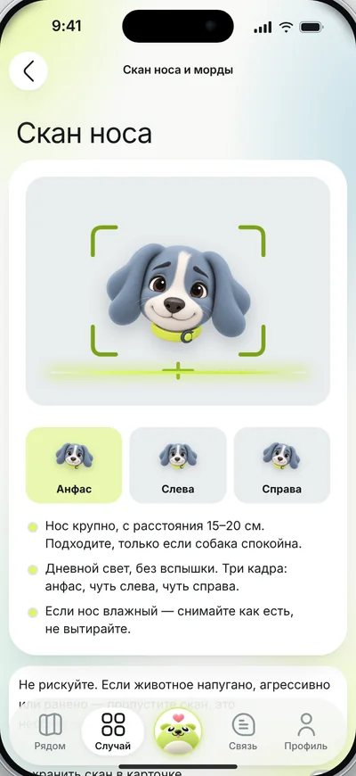
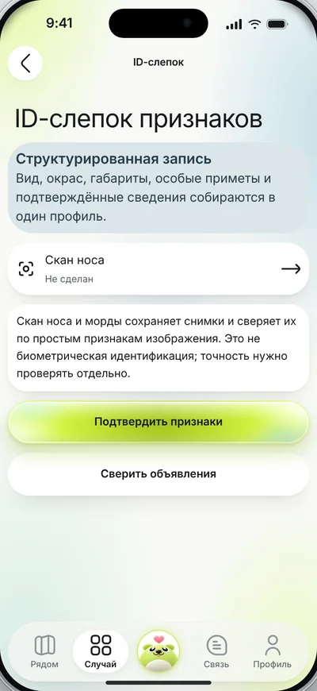
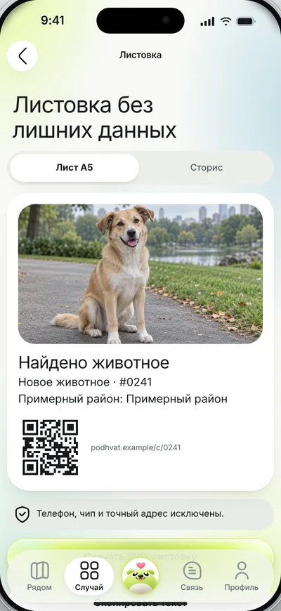
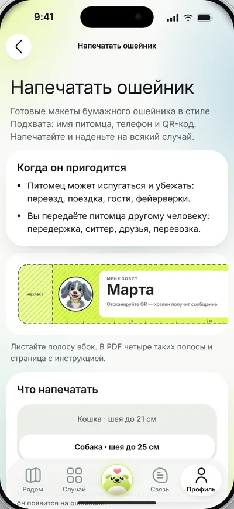

Из карточки питомца Скаут готовит бумажный ошейник: четыре полоски на листе. На каждой имя, телефон владельца, QR-код и надпись «Нашли меня?».
Скаут подготавливает данные для заявления о находке; подаёте его вы сами. Цифровая листовка делается из фото и района, с QR-кодом на карточку: телефон, чип и точный адрес в неё не попадают.
Листовку можно скачать готовым файлом и распечатать. Документы питомца хранятся приватно на вашем кабинете.
Интерактивная карта случаев даёт возможность увидеть случаи пропажи или помощи рядом с вами — именно в вашем районе. Таким образом вы сможете проверить, есть ли рядом хозяин с нужным объявлением, а может, были похожие случаи находки и сравнить карточки. Или вы можете стать тем самым волонтёром, который спешит на помощь.
На карте показаны те случаи, которые отмечены местом и зафиксированы на фото, видео или в формате 360. Также есть функция «Списка», где вы можете подробнее узнать о ситуации вокруг и найти подходящий случай без фото.
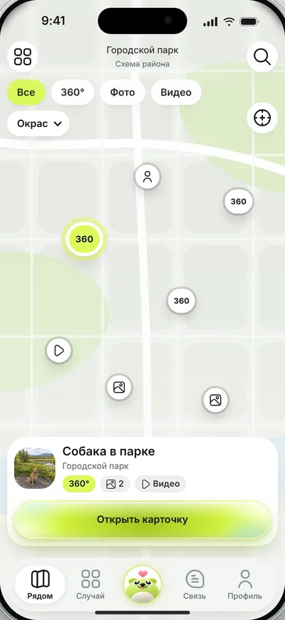
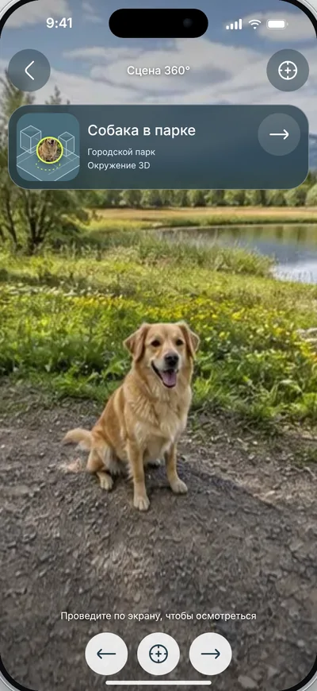
Уровень растёт вместе с вашими добрыми делами. Чтобы человек чувствовал себя комфортнее в стрессовой ситуации, Скаут старается поддерживать пользователя на разных этапах, давая разные ачивки и слова благодарности.
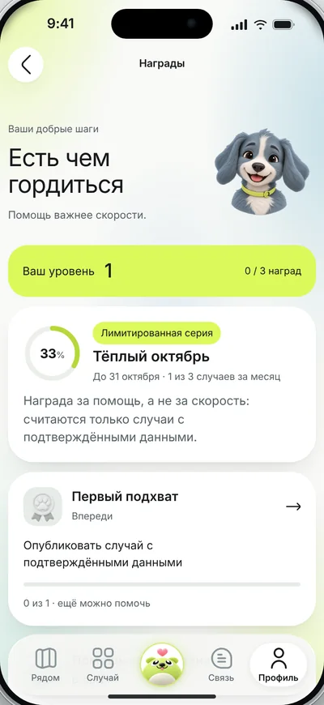
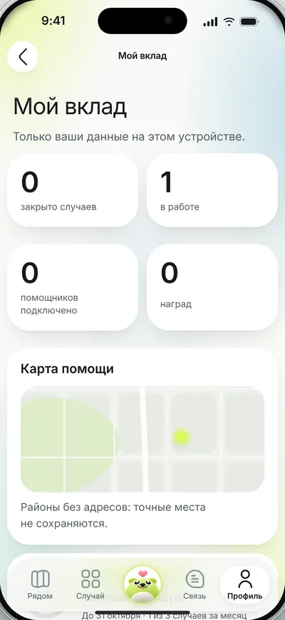